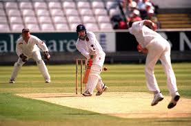
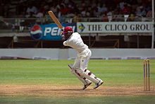

Sports Euphoria
Sports EuphoriaCricket
 Cricket is a bat-and-ball game played between two teams of 11 players on a field, at the centre of which is a rectangular 22-yard long pitch. One team bats, trying to score as many runs as possible while the other team bowls and fields, trying to dismiss the batsmen and thus limit the runs scored by the batting team. A run is scored by the striking batsman hitting the ball with his bat, running to the opposite end of the pitch and touching the crease there without being dismissed. The teams switch between batting and fielding at the end of an innings. In professional cricket the length of a game ranges from 20 overs of six bowling deliveries per side to Test cricket played over five days. The Laws of Cricket are maintained by the International Cricket Council (ICC) and the Marylebone Cricket Club(MCC) with additional Standard Playing Conditions for Test matches and One Day Internationals. Cricket was first played in southern England in the 16th century. By the end of the 18th century, it had developed into the national sport of England. The expansion of the British Empire led to cricket being played overseas and by the mid-19th century the first international matches were being held. The ICC, the game's governing body, has 10 full members. The game is most popular in Australasia, England, the Indian subcontinent, the West Indies and Southern Africa. Rules and game-play Umpires and scorers The game on the field is regulated by two umpires, one of whom stands behind the wicket at the bowler's end, the other in a position called "square leg", a position 15�20 metres to the side of the "on strike" batsman. The role of the umpires is to adjudicate on . Umpires also decide on the suitability of the playing conditions and can interrupt or even abandon the match due to circumstances likely to endanger the players, such as a damp pitch or deterioration of the light. Off the field and in televised matches, there is often a third umpire who can make decisions on certain incidents with the aid of video evidence. The third umpire is mandatory under the playing conditions for Test matches and limited overs internationals played between two ICC full members. These matches also have a match referee whose job is to ensure that play is within the Laws of cricket and the spirit of the game.
Team structure
A team consists of eleven players. Depending on his or her primary skills, a player may be classified as a specialist batsman or bowler. A well-balanced team usually has five or six specialist batsmen and four or five specialist bowlers. Teams nearly always include a specialist wicket-keeper because of the importance of this fielding position. Each team is headed by a captain who is responsible for making tactical decisions such as determining the batting order, the placement of fielders and the rotation of bowlers. A player who excels in both batting and bowling is known as an all-rounder. One who excels as a batsman and wicket-keeper is known as a "wicket-keeper/batsman", sometimes regarded as a type of all-rounder. True all-rounders are rare as most players focus on either batting or bowling skills.
Bowling
The bowler reaches his delivery stride by means of a "run-up", although some bowlers with a very slow delivery take no more than a couple of steps before bowling. A fast bowler needs momentum and takes quite a long run-up, running very fast as he does so. The fastest bowlers can deliver the ball at a speed of over 90 miles per hour (140 km/h) and they sometimes rely on sheer speed to try and defeat the batsman, who is forced to react very quickly. Other fast bowlers rely on a mixture of speed and guile. Some fast bowlers make use of the seam of the ball so that it "curves" or "swings" in flight. This type of delivery can deceive a batsman into mistiming his shot so that the ball touches the edge of the bat and can then be "caught behind" by the wicketkeeper or a slip fielder. At the other end of the bowling scale is the "spinner" who bowls at a relatively slow pace and relies entirely on guile to deceive the batsman. A spinner will often "buy his wicket" by "tossing one up" (in a slower, higher parabolic path) to lure the batsman into making a poor shot. The batsman has to be very wary of such deliveries as they are often "flighted" or spun so that the ball will not behave quite as he expects and he could be "trapped" into getting himself out.
Fielding
All eleven players on the fielding side take the field together. One of them is the wicket-keeper aka "keeper" who operates behind the wicket being defended by the batsman on strike. Wicket-keeping is normally a specialist occupation and his primary job is to gather deliveries that the batsman does not hit, so that the batsmen cannot run byes. He wears special gloves (he is the only fielder allowed to do so), a box over the groin, and pads to cover his lower legs. Owing to his position directly behind the striker, the wicket-keeper has a good chance of getting a batsman out caught off a fine edge from the bat. He is the only player who can get a batsman out stumped.
Batting
 At any one time, there are two batsmen in the playing area. One takes station at the striker's end to defend the wicket as above and to score runs if possible. His partner, the non-striker, is at the end where the bowler is operating.
Batsmen come in to bat in a batting order, decided by the team captain. The first two batsmen � the "openers" � usually face the hostile bowling from fresh fast bowlers with a new ball. The top batting positions are usually given to the most competent batsmen in the team, and the team's bowlers - who are typically, but not always, less skilled as batsmen - typically bat last. The pre-announced batting order is not mandatory; when a wicket falls any player who has not yet batted may be sent in next.
If a batsman "retires" (usually due to injury) and cannot return, he is actually "not out" and his retirement does not count as a dismissal, though in effect he has been dismissed because his innings is over. Substitute batsmen are not allowed.
A skilled batsman can use a wide array of "shots" or "strokes" in both defensive and attacking mode. The idea is to hit the ball to best effect with the flat surface of the bat's blade. If the ball touches the side of the bat it is called an "edge". Batsmen do not always seek to hit the ball as hard as possible, and a good player can score runs just by making a deft stroke with a turn of the wrists or by simply "blocking" the ball but directing it away from fielders so that he has time to take a run.
A batsman is not required to play a shot; in the event that he believes the ball will not hit his wicket and there is no opportunity to score runs, he can "leave" the ball to go through to the wicketkeeper. Equally, he does not have to attempt a run when he hits the ball with his bat. He can deliberately use his leg to block the ball and thereby "pad it away" but this is risky because of the leg before wicket rule.
At any one time, there are two batsmen in the playing area. One takes station at the striker's end to defend the wicket as above and to score runs if possible. His partner, the non-striker, is at the end where the bowler is operating.
Batsmen come in to bat in a batting order, decided by the team captain. The first two batsmen � the "openers" � usually face the hostile bowling from fresh fast bowlers with a new ball. The top batting positions are usually given to the most competent batsmen in the team, and the team's bowlers - who are typically, but not always, less skilled as batsmen - typically bat last. The pre-announced batting order is not mandatory; when a wicket falls any player who has not yet batted may be sent in next.
If a batsman "retires" (usually due to injury) and cannot return, he is actually "not out" and his retirement does not count as a dismissal, though in effect he has been dismissed because his innings is over. Substitute batsmen are not allowed.
A skilled batsman can use a wide array of "shots" or "strokes" in both defensive and attacking mode. The idea is to hit the ball to best effect with the flat surface of the bat's blade. If the ball touches the side of the bat it is called an "edge". Batsmen do not always seek to hit the ball as hard as possible, and a good player can score runs just by making a deft stroke with a turn of the wrists or by simply "blocking" the ball but directing it away from fielders so that he has time to take a run.
A batsman is not required to play a shot; in the event that he believes the ball will not hit his wicket and there is no opportunity to score runs, he can "leave" the ball to go through to the wicketkeeper. Equally, he does not have to attempt a run when he hits the ball with his bat. He can deliberately use his leg to block the ball and thereby "pad it away" but this is risky because of the leg before wicket rule.
Results
If the team that bats last is all out having scored fewer runs than their opponents, the team is said to have "lost by n runs" (where n is the difference between the number of runs scored by the teams). If the team that bats last scores enough runs to win, it is said to have "won by n wickets", where n is the number of wickets left to fall. For instance a team that passes its opponents' score having only lost six wickets would have won "by four wickets". In a two-innings-a-side match, one team's combined first and second innings total may be less than the other side's first innings total. The team with the greater score is then said to have won by an innings and n runs, and does not need to bat again: n is the difference between the two teams' aggregate scores. If the team batting last is all out, and both sides have scored the same number of runs, then the match is a tie; this result is quite rare in matches of two innings a side. In the traditional form of the game, if the time allotted for the match expires before either side can win, then the game is declared a draw.
History
Early cricket was at some time or another described as "a club striking a ball (like) the ancient games of club-ball, stool-ball, trap-ball, stob-ball".Cricket can definitely be traced back to Tudor times in early 16th-century England. Written evidence exists of a game known as creag being played by Prince Edward, the son of Edward I (Longshanks), at Newenden, Kent in 1301 and there has been speculation, but no evidence, that this was a form of cricket. A number of other words have been suggested as sources for the term "cricket". In the earliest definite reference to the sport in 1598, it is called creckett. Given the strong medieval trade connections between south-east England and the County of Flanderswhen the latter belonged to the Duchy of Burgundy, the name may have been derived from the Middle Dutchkrick(-e), meaning a stick (crook); or the Old English cricc or cryce meaning a crutch or staff.[ In Old French, the word criquet seems to have meant a kind of club or stick. In Samuel Johnson's Dictionary, he derived cricket from "cryce, Saxon, a stick".[ Another possible source is the Middle Dutch word krickstoel, meaning a long low stool used for kneeling in church and which resembled the long low wicket with two stumps used in early cricket[ According to Heiner Gillmeister, a European language expert ofBonn University, "cricket" derives from the Middle Dutch phrase for hockey, met de (krik ket)sen (i.e., "with the stick chase") Dr Gillmeister believes that not only the name but the sport itself is of Flemish origin.[ The earliest definite reference to cricket being played in England (and hence anywhere) is in evidence given at a 1598 court case which mentions that "creckett" was played on common land inGuildford, Surrey, around 1550. The court in Guildford heard on Monday, 17 January 1597 (Julian date, equating to the year 1598 in the Gregorian calendar) from a 59 year-old coroner, John Derrick, who gave witness that when he was a scholar at the "Free School at Guildford", fifty years earlier, "hee and diverse of his fellows did runne and play [on the common land] at creckett and other plaies." It is believed that it was originally a children's game but references around 1610 indicate that adults had started playing it and the earliest reference to inter-parish or village cricket occurs soon afterwards. In 1624, a player called Jasper Vinall was killed when he was struck on the head during a match between two parish teams in Sussex.
Test cricket
 Test cricket is the highest standard of first-class cricket. A Test match is an international fixture between teams representing those countries that are Full Members of the ICC. Although the term "Test match" was not coined until much later, Test cricket is deemed to have begun with two matches between Australia and England in the 1876�77 Australian season. Subsequently, eight other national teams have achieved Test status: South Africa (1889), West Indies (1928), New Zealand (1929), India (1932),Pakistan (1952), Sri Lanka (1982), Zimbabwe (1992) and Bangladesh (2000). Zimbabwe suspended its Test status in 2006 due to its inability to compete against other Test teams, and returned in 2011.
National championships
First-class cricket includes Test cricket but the term is generally used to refer to the highest level of domestic cricket in those countries with full ICC membership, although there are exceptions to this. First-class cricket in England is played for the most part by the 18 county clubs which contest the County Championship. The concept of achampion county has existed since the 18th century but the official competition was not established until 1890. The most successful club has been Yorkshire County Cricket Club with 30 official titles. Australia established its national first-class championship in 1892�93 when theSheffield Shield was introduced. In Australia, the first-class teams represent the various states. New South Wales has won the maximum number of titles with 45 to 2008. mini-leagues.